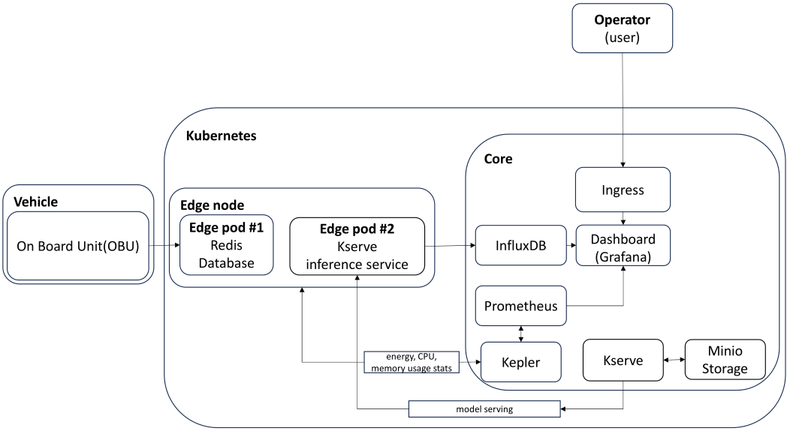
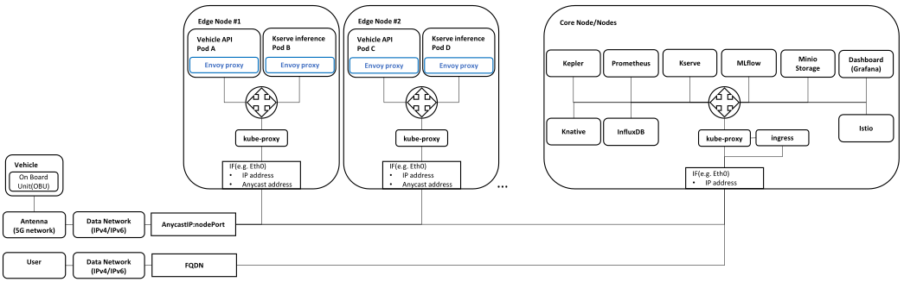
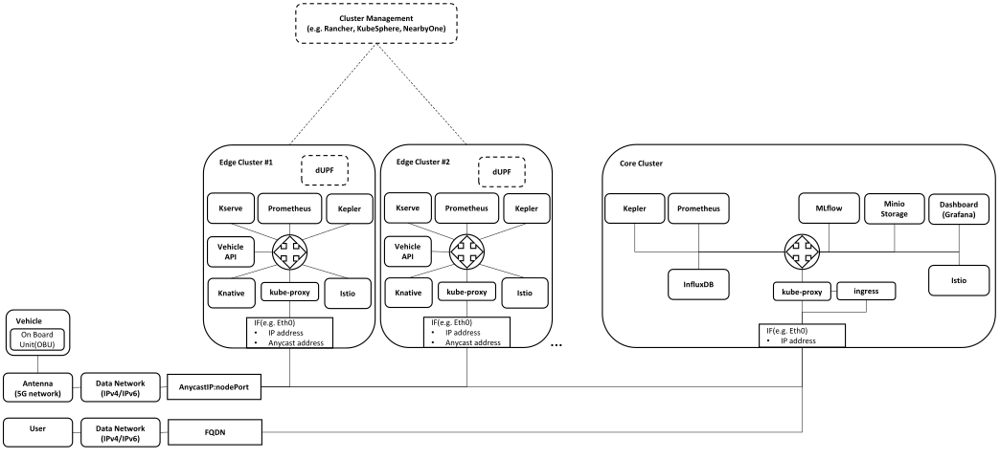

Architecture¶
Basic Architecture¶
|  |
|---|
| Basic Architecture |
Single cluster architecture¶
 |
|---|
| Single cluster architecture |
Advantages:
- Simplified Management:
- Easier to manage and maintain as there's only one cluster.
- Simplified network configuration and service discovery within the cluster.
- Resource Efficiency:
- Better utilization of resources since there is no need to allocate separate resources for multiple clusters.
- Cost-Effective:
- Lower operational costs due to reduced overhead in managing multiple clusters.
- Reduced complexity in monitoring and logging, leading to potential cost savings.
- Unified Security and Policy Management:
- Simplified implementation of security policies, access controls, and compliance measures.
- Consistent Environment:
- Ensures a consistent environment across all nodes, simplifying development and deployment processes.
Disadvantages:
- Scalability Limitations:
- May face scalability issues as the number of edge devices or workloads increases.
- Single point of failure; if the cluster goes down, all connected devices and services are affected.
- Performance Bottlenecks:
- Potential for performance bottlenecks if the cluster becomes overloaded.
- Limited fault isolation; issues in one part of the cluster can impact the entire system.
- Geographical Constraints:
- Less optimal for geographically distributed edge nodes as latency might increase.
- May not efficiently handle diverse network conditions across different locations.
Single cluster architecture (advanced)¶
|  |
|---|
| Single cluster architecture(advanced) |
Architecture improved by involving service mesh for optimal micro service traffic routing. For more info see istio documentation
Multi cluster architecture¶
|  |
|---|
| Multi cluster architecture |
Multi cluster deployment that can utilize dUPF metrics (e.g. number of connected users) to decide if the application should be deployed in a neighboring micro cluster
Advantages:
- Scalability and Fault Isolation:
- Better scalability by distributing workloads across multiple clusters.
- Improved fault isolation; problems in one cluster do not affect others.
- Geographical Distribution:
- Optimized for geographically distributed deployments, reducing latency by placing clusters closer to the edge devices.
- Can handle diverse network conditions more effectively.
- Performance Optimization:
- Easier to optimize performance by dedicating clusters to specific workloads or regions.
- Enhanced load balancing and resource distribution.
- Resilience and High Availability:
- Higher resilience and availability; failure in one cluster can be mitigated by other clusters.
- Enhanced disaster recovery capabilities.
Disadvantages:
- Increased Complexity:
- More complex to manage and maintain multiple clusters.
- Higher administrative overhead in coordinating and synchronizing clusters.
- Resource Overhead:
- Requires more resources for cluster management (e.g., control planes for each cluster).
- Potentially higher infrastructure costs due to multiple clusters.
- Security and Policy Management:
- More complex to implement and manage security policies and compliance across multiple clusters.
- Potential challenges in maintaining consistent security postures across clusters.
- Inter-Cluster Communication:
- Requires robust inter-cluster communication mechanisms, which can add to the complexity.
- More complicated service discovery and networking between clusters.
Conclusion¶
The choice between single-cluster and multi-cluster Kubernetes deployments for IoT on the edge depends on factors such as scale, geographic distribution, resource availability, and management complexity. Single-cluster deployments are simpler and more cost-effective for smaller, localized environments, whereas multi-cluster deployments offer better scalability, fault isolation, and performance optimization for larger, distributed environments.